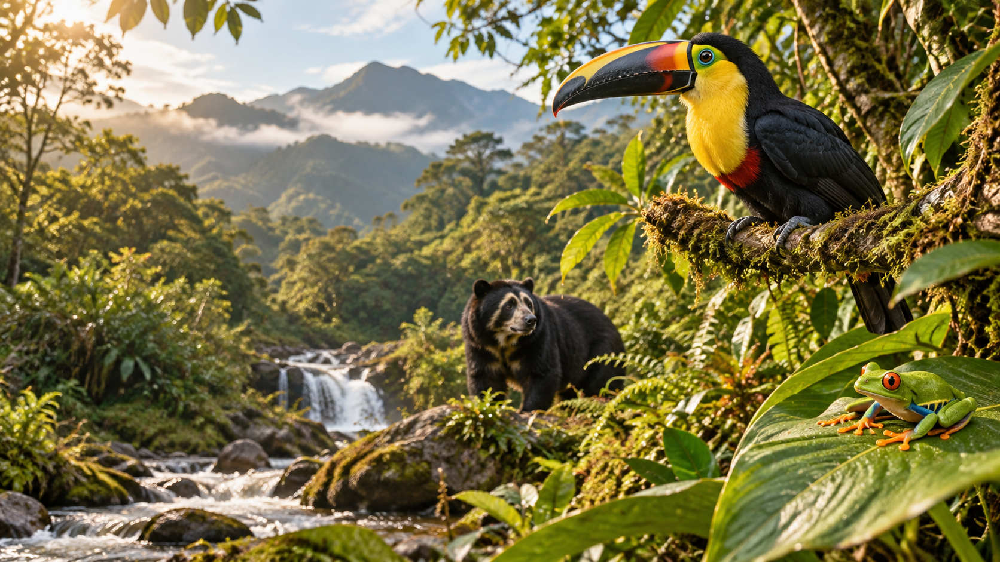
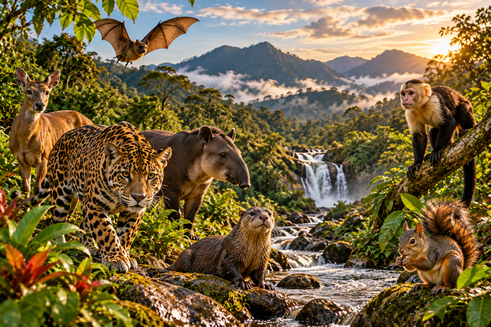
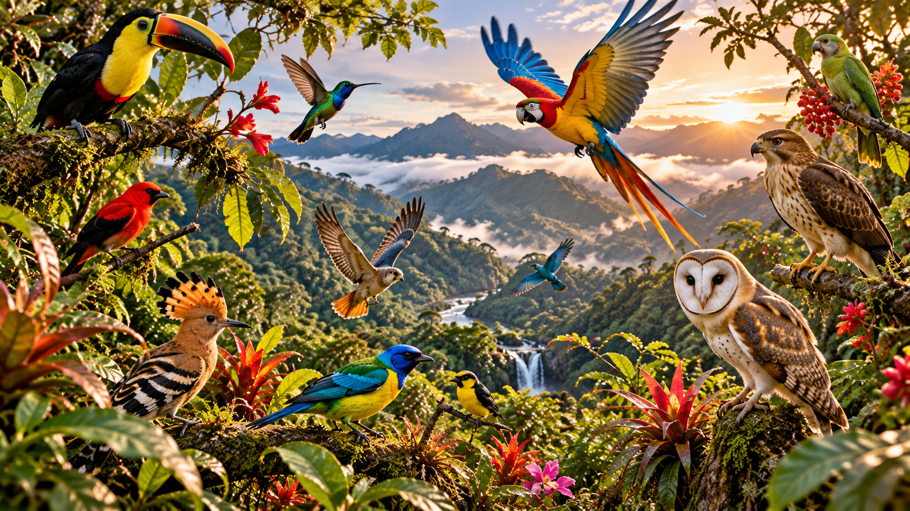
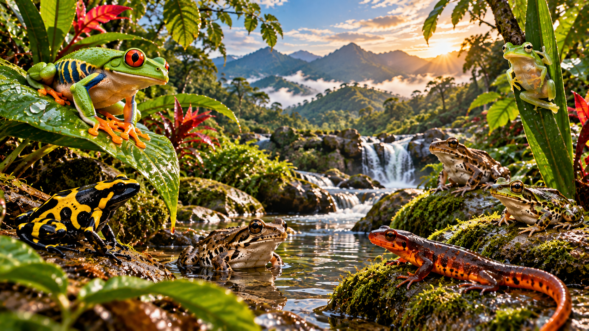
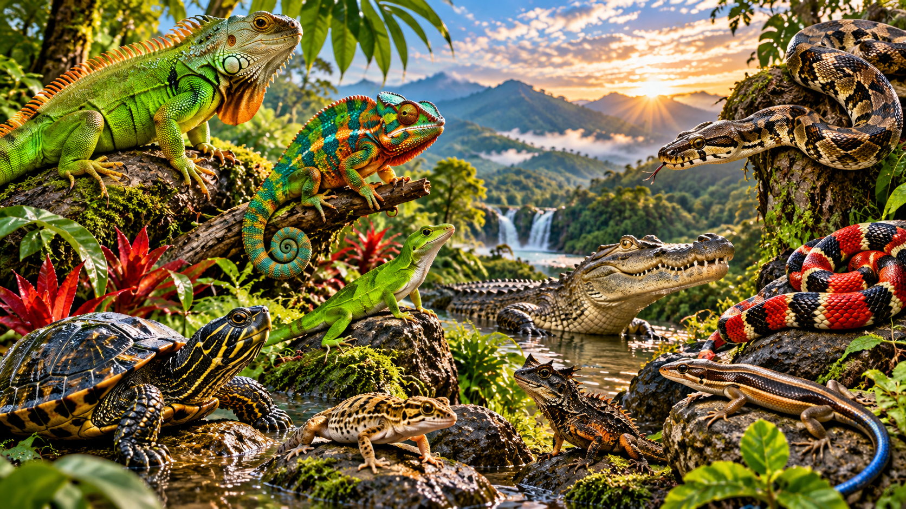
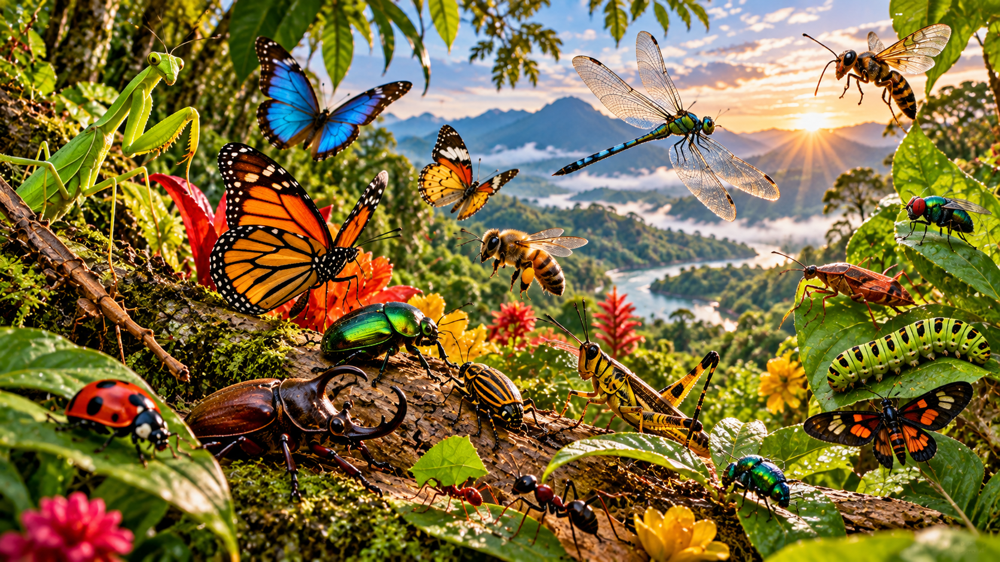
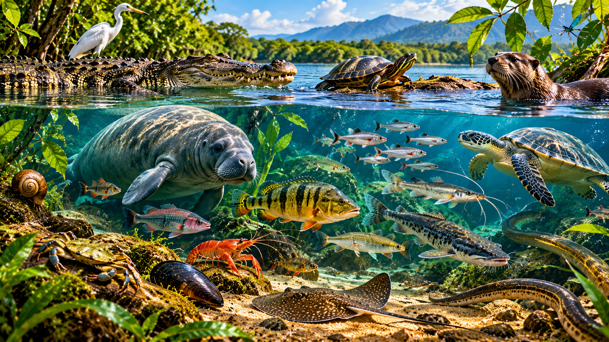

Aprende a reconocer sus características y necesidades.
Biodiversidad del Cauca
🦋 Descubre la fauna y aprende a protegerla
La fauna forma parte de la riqueza natural del departamento del Cauca. Los animales habitan distintos ecosistemas y cumplen funciones importantes en el equilibrio de la naturaleza.
En esta sección encontrarás información organizada sobre diferentes grupos de animales, sus características, hábitats, importancia ecológica y las amenazas que pueden afectar su supervivencia.
Explorar la fauna ↓
Descubre cómo las actividades humanas pueden afectar sus hábitats.
Identifica acciones cotidianas que ayudan a proteger la biodiversidad.
Explora las seis categorías de fauna
Selecciona una categoría para consultar información educativa, videos y juegos interactivos. El contenido está organizado para facilitar el aprendizaje desde computadores y celulares.

🐻 Mamíferos
Conoce las características de los mamíferos, sus formas de alimentación, los lugares donde viven y su función ecológica.
Conocer más →
🦜 Aves
Descubre sus plumas, picos, cantos y las funciones que cumplen en la polinización, la dispersión de semillas y las cadenas alimentarias.
Conocer más →
🐸 Anfibios
Aprende sobre ranas, sapos y otros anfibios, su desarrollo y la importancia de cuidar los ambientes húmedos.
Conocer más →
🦎 Reptiles
Explora las características de serpientes, tortugas y lagartos, y aprende a respetarlos y proteger sus hábitats.
Conocer más →
🦋 Insectos
Conoce la diversidad de los insectos y su participación en la polinización, la descomposición y las redes alimentarias.
Conocer más →
🐟 Fauna acuática
Descubre animales de ríos, quebradas, lagunas y otros ambientes acuáticos, y aprende por qué debemos cuidar el agua.
Conocer más →💚 Amenazas y conservación de la fauna
La pérdida de hábitat, la contaminación, la caza y captura ilegal y otras actividades humanas pueden afectar a los animales y alterar las relaciones naturales de los ecosistemas.
Cuida los bosques, la vegetación, las quebradas y los espacios naturales donde los animales encuentran alimento y refugio.
No arrojes residuos a los ríos, suelos o bosques y reduce los impactos de tus actividades sobre el entorno.
No captures ni compres animales silvestres. Obsérvalos a una distancia segura y evita alterar sus refugios.
Comparte información responsable, apoya iniciativas comunitarias de conservación y promueve el respeto por la biodiversidad.